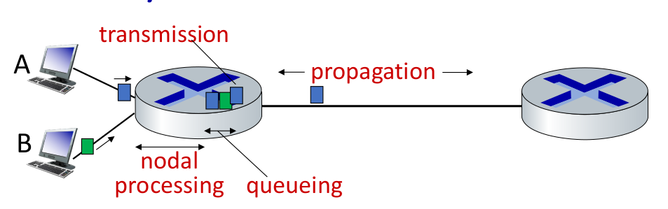
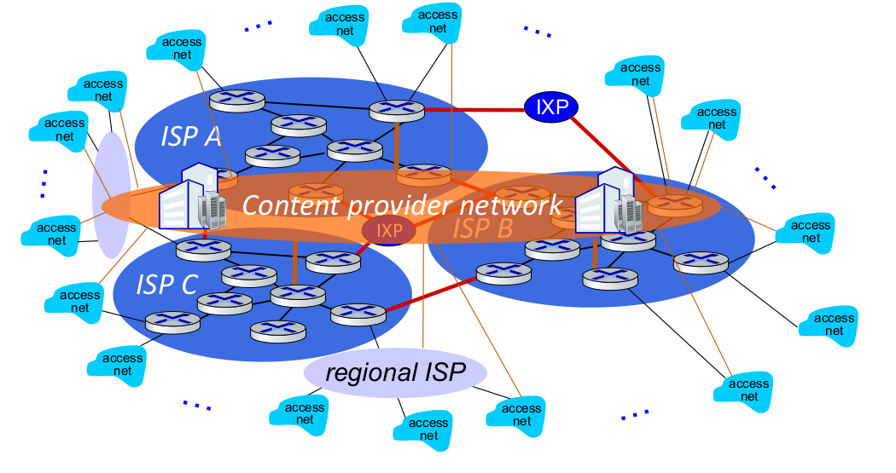
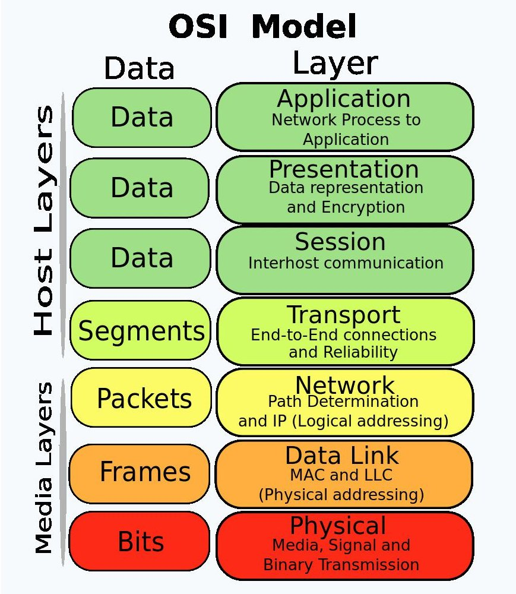
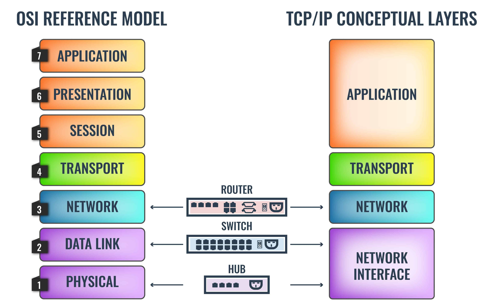
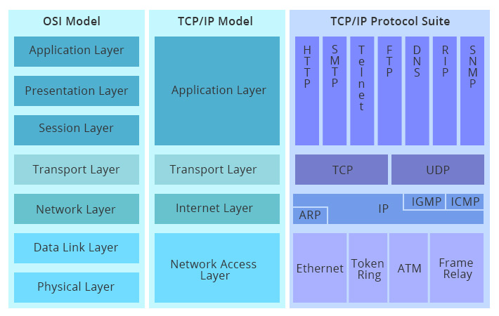

Networking
Internet
nut bolt view
- billions of connected devices
- hosts - endpoints
- packet switches
- forward packets
- routers, switches
- communication links
- fibre, copper, radio satellite
- transmission rate - bandwidth
- networks
- collection of devices, routers, link managed by organization
- internet - networks of networks
- interconnected ISP's
- protocols are everywhere
- controls sending and receiving of messages
- internet standards
- IETF - Internet engineering task force
- develops and promotes voluntary Internet standards, in particular the technical standards that comprise the Internet protocol suite
- RFC - Request for comments, produced by IETF
- IETF - Internet engineering task force
services view
- infrastructure that provides services to applications
- provides programming interfaces to distributed application
Protocols
Protocols define the
- format
- order of messages sent and received among network entities
- and actions taken on message transmission,
- receipt
Internet structure
- network edge
- hosts - clients
- servers - in data centers
- access network, physical media
- wired, wireless communication links
- network core
- interconnected routers
- network of networks
Host: sends packet of data
-
host sending function
- take application messages
- breaks it into small chunks, known as packets of length \(L\) bits
- transmits packets into access network at transmission rate \(R\)
-
same things:
- network transmission rate
- link transmission rate
- link capacity
- link bandwidth
-
packet transmission delay \(d_t\)
- time needed to transmit \(L\) bit packet into link
\[
d_t = \frac{L}{R} \frac{(\text{bit})}{(\text{bit/s})}
\]
Links - physical media
- bit - propagates between transmitter-receiver pair
- physical link - what lies between transmitter and receiver
- guided media - signal propagates in solid medium
- unguided media - signal propagates freely
guided media
- twisted pair (TP)
- two insulated copper wire
- category 5 - 100 Mbps - 1Gbps Ethernet
- category 6 - 100 Gbps Ethernet
- coaxial cable
- bidirectional
- broadband
- multiple frequency channels on cable
- 100 Mbps per channel
- fibre optic cable
- 10-100 Gbps
unguided media
- wireless radio
- wireless LAN wifi
- wide area - 4g
- bluetooth
- terrestrial microwave
- satellite
Network core
- packet switching and circuit switching
Circuit switching
- end to end resources allocated to, reserve for a call between source and destination
- dedicated resources - no sharing
- circuit segment is idle if not used by the call
- was used in telephone networks
Multiplexing
Multiplexing is a technique used to combine and send the multiple data streams over a single medium. The transmission medium is used to send the signal from sender to receiver. The medium can only have one signal at a time. When multiple signals share the common medium, there is a possibility of collision. Multiplexing concept is used to avoid such collisions.
- frequency division multiplexing (FDM)
- electromagnetic frequencies - divided into narrow bands
- each user gets its own band
- time division multiplexing (TDM)
- time divided into sots
- each call is allocated periodic slot
Packet switching
- host breaks application layer messages into packets
- network forward packets form one router to another
- across links from source to destination
- two key networks core functions
- forwarding/switching - local action
- routing - global action
- store and forward
- packet transmission delay \(L/R\) seconds
- to transmit a \(L\) bit packet into a link at \(R\) bps
- store and forward
- entire packet must arrive to router before it can be transmitted
- packet transmission delay \(L/R\) seconds
- queuing
- occurs because packet arrives faster than they can be transmitted
- if arrival rate exceeds the transmission rate queuing will occur
- packets will be in queue, waiting to be transmitted on output link
- packets can be dropped or if memory (buffer) in router fills up
how packet delay and loss occur
- packet queue in router buffer, waiting for their turn in transmission
- packet loss occurs when memory to hold queued packet fills up
delay sources

\[
d_{nodal} = d_{proc} + d_{queue} + d_{trans} + d_{prop}
\]
- \(d_{proc}\) - nodal processing delay
- check bit errors
- determine output link
- typically less than microsecond
- \(d_{queue}\) - queueing delay
- time wasting at output link for transmission
- depends on congestion level of the router
- \(a\) - average packet arrival rate in bits per sec
- \(L\) - packet size in bit
- \(R\) - transmission rate in bits per sec
- traffic intensity = \(La/R\)
- ~ 0 - small queuing delay
- -> 1 - large queuing delay
- > 1 - inf queuing delay
- \(d_{tarns}\) - transmission delay
- \(L\) - packet size in bit
- \(R\) - transmission rate in bits per sec
- \(d_{trans} = L/R\)
- \(d_{prop}\) - propagation delay
- \(d\) - length of the physical link
- \(s\) - propagation speed
- \(d_{prop} = d/s\)
- transmission delay is the amount of time required to push all the packet's bits into the wire
- queuing delay is delays encountered by a packet between the time of insertion into the network and the time of delivery to the address
- processing delay is the time it takes routers to process the packet header
- propagation delay is the time duration taken for a signal to reach its destination.
throughput
- rate - bits per second - at which data is being send form transmitter to receiver
- instantaneous - at given point
- average - rate over longer period of time
How is it connected
- host connected to
- access isp connected to
- regional isp
- content provider network link google
- global isp connected by
- ixp - internet exchange point
- regional isp
- access isp connected to

topology it defines how the network is connected
- bus topology
- star topology - this is most common now
- ring topology
- mesh topology
Protocol, layers, service models
why layering
- to design complex systems
- explicit structure allows identification, relationship of system pieces
- modularization eases maintenance and updating the system
layered protocol stack
- application
- presentation
- session
- transport
- network
- data link
- physical



OSI Model
- developed by iso
- dod - department of defense model, later renamed to
tcp/ip- most used now
- osi - reference model, only rules and regulations
- tcp/ip model - follow this
- there are other models too,
- other network protocols are
- netware - used by windows earlier, for file sharing
- appletalk
- Open system Interconnection model
- Develop by International organization for standardization
- Reference model
- Describe how information from software application in one computer move through physical medium to the software application in another computer.
- 7 layers
- Application Layer
- Presentation Layer
- Session Layer
- Transport layer
- Network Layer
- Data-link layer
- Physical layer
- upper layer (application,presentation,session,transport)
- deals with application related issues
- implemented only in software
- lower layer (Network,Data-link,physical)
- deals with data transport issue
- Each layer is self- contained , so that the task assigned to each layer can be performed independently.
layers
APSTNDP
- application
- presentation
- session
- transport
- network
- data link
- physical
NOTE:
- every layer have some PDU - protocol data unit which is the type of data present in that layer
Application
- use
- provide service to user
- software generate the data
- protocols
- Telnet/SSH
- FTP/SFTP/SCP
- SMTP/POP3/IMAP
- HTTP/HTTPS
- BGP
- DNS
- SNMP
- NetBIOS
- NTP
- WINS
- RIP/RIP2/RIPRng
- pdu
- data
Presentation
- use
- format of the data
- compression and decompression
- encrypt and decrypt data
- for translation,encryption ,compression
- pdu
- data
Session
- use
- maintain the session via port numbers
- like same website on different tabs on browser
- or different application
- data will not get intermixed
- used to manage , establish ,terminate session
- it allows the communication between two processes which can be either half-duplex or full-duplex.
- adds some checkpoints when transmitting the data in a sequence.
- Synchronization and recovery process - if error occurs in middle of transmission, then the transmission will resume from the checkpoint.
- pdu
- data
transport
- use
- main responsibility, transfer the data completely
- receives the data from the upper layer and converts them into smaller units known as segments.
- termed as an end-to-end layer,provides a point-to-point connection between source and destination to deliver data reliably.
- ensures that messages are transmitted in the order in which they are sent and there is no duplication of data.
- end to end delivery of the data
- udp and tcp protocols are used
- flow control - don't send more data
- congestion control - too many packets in the network
- segmentation - dividing into packets
- error correction
- protocols
- TCP
- UDP
- pdu
- segment
Network
- use
- manages device addressing
- tracks the location of devices on the network.
- determines the best path to move data from source to the destination
- routers used in this layer
- ip address
- source and destination address headers are added
- routing is done
- protocols
- IP
- IPv6
- SCP
- ARP
- RARP
- ICMP
- IGMP
- pdu
- packets
Data Link
- use
- used for error free transfer of data frames
- source and destination mac address is added
FF:FF:FF:FF:FF:FFbroadcast mac address, or add mac address of the gateway- they keep on changing when frame is passed between routers
- ip address in never changed
- protocols
- Ethernet Ring
- Token Ring
- Frame Relay
- ATM
- SONET
- SDH
- PD H
- CD MA
- GSM
- pdu
- frames
Physical
- use
- provide physical medium through which bits are transmitted
- connecters, cables, hub, work on this layer
- pdu
- bit
tcp/ip model
- application
- OSI - application, presentation, session mix
- transport
- OSI - transport
- internet
- OSI - network
- network access
- OSI - data link, physical
Hardware Networking
NIC - Network Interface Card
- on pc they are connected through pic
- every nic have a mac address
- my laptop have two mac address
- one for the ethernet nic card
- one for the wifi nic card
- dongels which are used to connect to internet through usb
- they also have nic card embedded and also have mordem
- when we use internet through usb mobile it also have a nic
- embedded to it so the mac address of the mobile will be used
hub (not used anymore)
- earlier when we used to connect multiple computers together we need more nic card, because one nic card can be used to connect to another computer, but if a second computer comes in you have to purchase another nic card for it. so if network become large you cannot purchase that many cards
- hub broadcast the data
- hub shared bandwidth, i.e. if 8mbps internet speed is given to it it will distribute to all the devices, so suppose 4 devices are connected each will get 2mbps even when someone is not using it
- hub usually have 4 to 8 ports
- less no of ports
switch
- more port - 24
- learns mac address and don't broadcast the data
Note
- Unicast - one to one,
- Multicast - one to many,
- Broadcast - one to all
bridge
- software based
- less ports compared to switch
router
- does routing
repeater
- amplify the signal
- after 100m ethernet used
modem
- modulation - analog to digital
- demodulation - digital to analog
Software in networking
- cisco packet tracer
- gcna
- ping - packet internet gopher, works on icmp protocol
Packet Tracer
router
- connect router to a end device through a cable
Modes:
- usermode
- privilege mode
enabledisable -
configuration mode
configure terminal -
?for help whenever you want Ctrl+shift+6to stop execution of a commandshow versionshow ip- show routing tableshow history- historyshow clock
connect two pc
- cross over cable is used